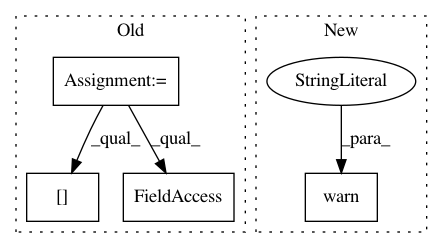

4c3495896e77a5a4ebfeff717feb3d04681d27e7,keras/activations.py,,time_distributed_softmax,#Any#,9
Before Change
return T.nnet.softmax(x)
def time_distributed_softmax(x):
xshape = x.shape
X = x.reshape((xshape[0] * xshape[1], xshape[2]))
return T.nnet.softmax(X).reshape(xshape)
def softplus(x):
After Change
def time_distributed_softmax(x):
import warnings
warnings.warn("time_distributed_softmax is deprecated. Just use softmax!", DeprecationWarning)
return softmax(x)
def softplus(x):
return T.nnet.softplus(x)
In pattern: SUPERPATTERN
Frequency: 3
Non-data size: 4
Instances
Project Name: keras-team/keras
Commit Name: 4c3495896e77a5a4ebfeff717feb3d04681d27e7
Time: 2015-06-23
Author: xavier@whirlscape.com
File Name: keras/activations.py
Class Name:
Method Name: time_distributed_softmax
Project Name: chainer/chainercv
Commit Name: b776ae08e9e676435c5cf8d1f31a86dfd3e1897f
Time: 2018-10-20
Author: yuyuniitani@gmail.com
File Name: chainercv/utils/image/read_image.py
Class Name:
Method Name: read_image
Project Name: dmlc/gluon-cv
Commit Name: 43fb5c65773eb5968013a46c47c35ca15947dbcb
Time: 2019-07-27
Author: zhang.hang@rutgers.edu
File Name: gluoncv/model_zoo/segbase.py
Class Name: SegBaseModel
Method Name: demo